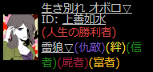

◇ ねじれ短期で印象に残ってる村 ◇
| おはなはな打ち上げ二次会村 | フランケンシュタイン セン | 2021/04/16 |
|
調停官の結果の見方の勘違いで、ネクロマンサー今日はさんと |
||
| きいねぎくんお誕生日おめでとう村 | 天邪鬼 ヒーラー | 2020/12/27 |
|
アズマーンがガーゴイルで凍傷になった村です！ |
||
| イレギュラー村 | リア充 クイン | 2020/11/21 |
|
はじめて恋窓でわちゃわちゃしました！ |
||
| 二次会前夜祭闇鍋村 | 独裁者 清水 | 2020/11/21 |
|
宇宙人優彩さんに振り回された村 |
||
| 希望有効シャッフル村 | 雷狼(仇敵) オボロ | 2020/09/12 |
|
短期なのにすごいサブの数だった！  |
||
| シャッフル希望有効村 | 狂人 ミュラー | 2020/09/12 |
|
村建て設定ミス？で匿名IDになってしまっているけど |
||
| むりだなちゃんお誕生日おめでと村 | 中身占い師 ミュラー | 2020/03/23 |
|
ものまね士→(魔法使いによるシャッフル)→能楽師→(面を被る)→中身占い師 |
||
| 土下座するガチャ村 | 憑狼 ヤドウィガ | 2020/01/17 |
|
課金者村の憑狼当たりました！これめちゃめちゃ楽しい！ |
||
| 闇鍋 | 宇宙人 ダミー | 2019/12/22 |
|
宇宙人になって初日ダミーにセットしてしまって |
||
Copyright(c)2020-2021 りゅ all rights reserved.